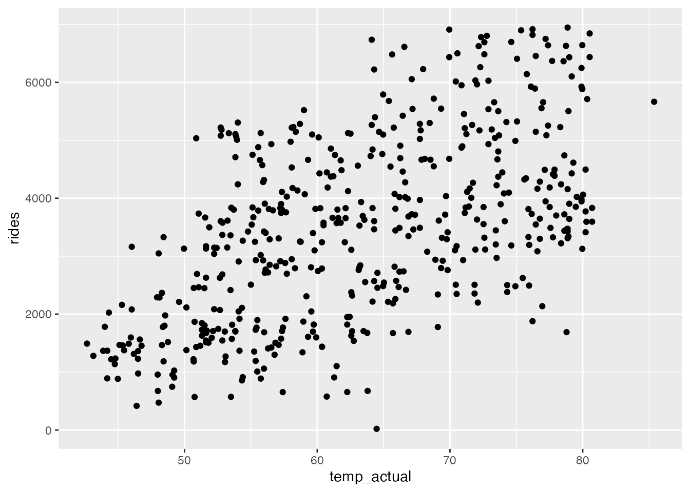
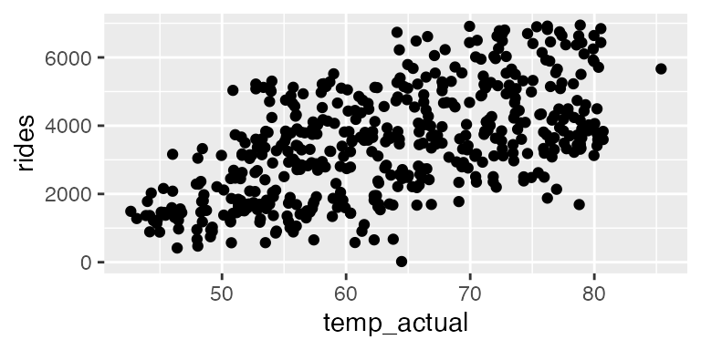
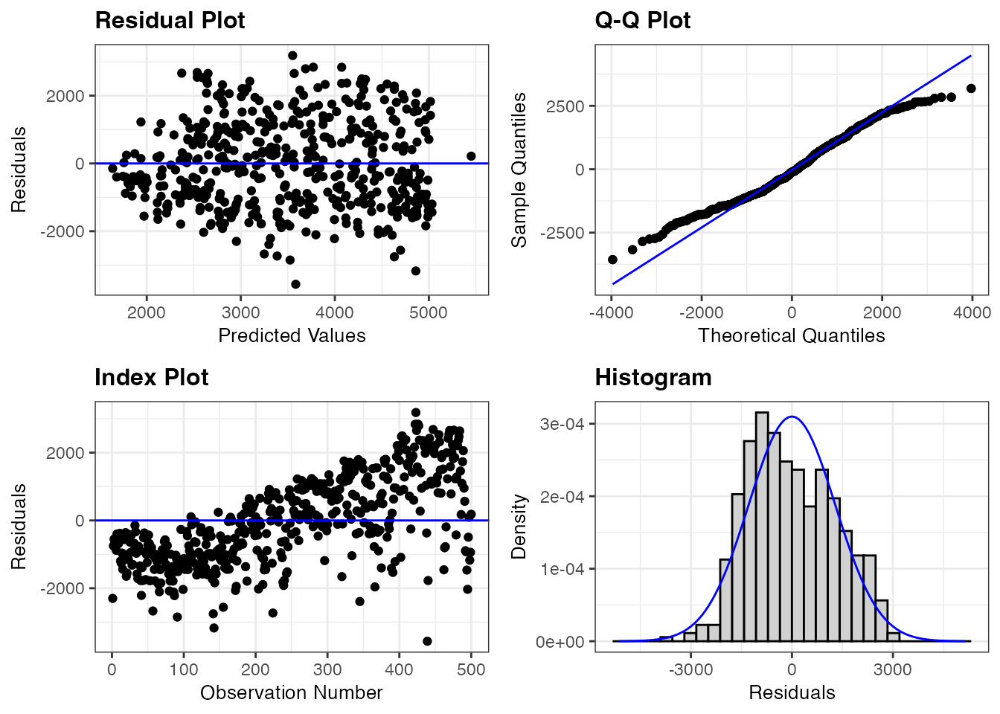
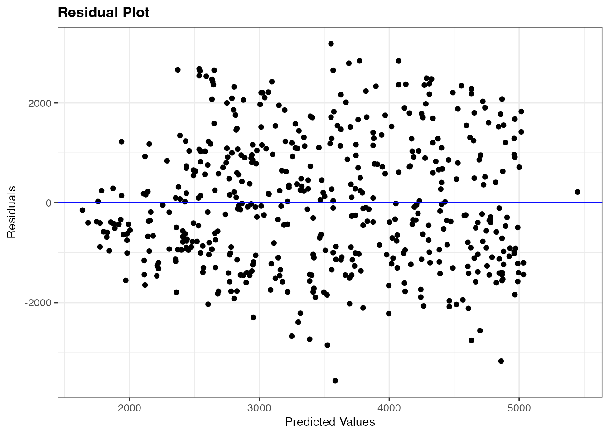
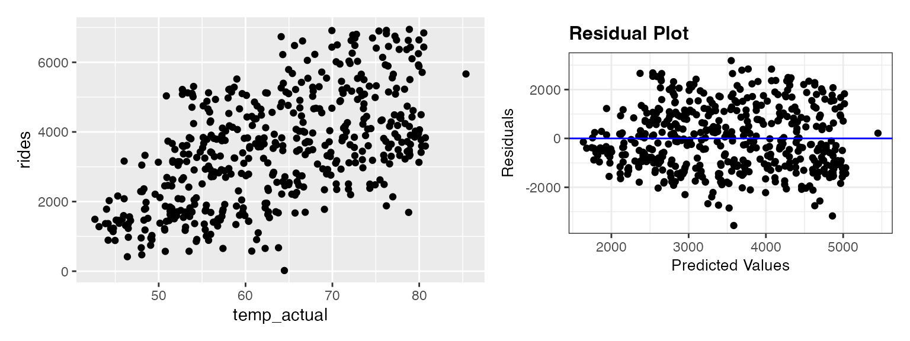
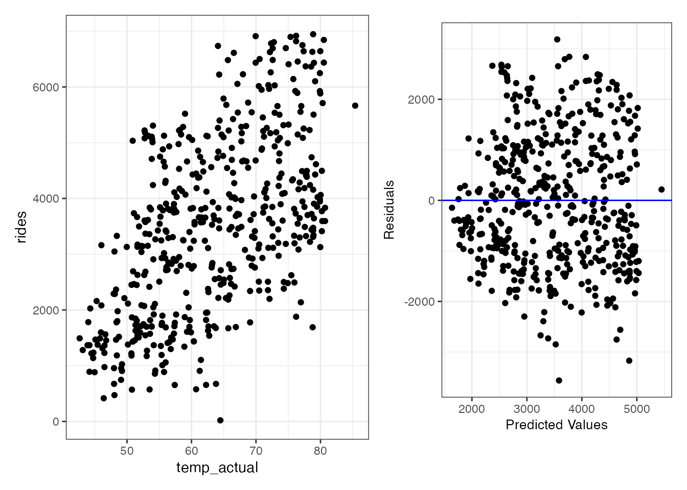
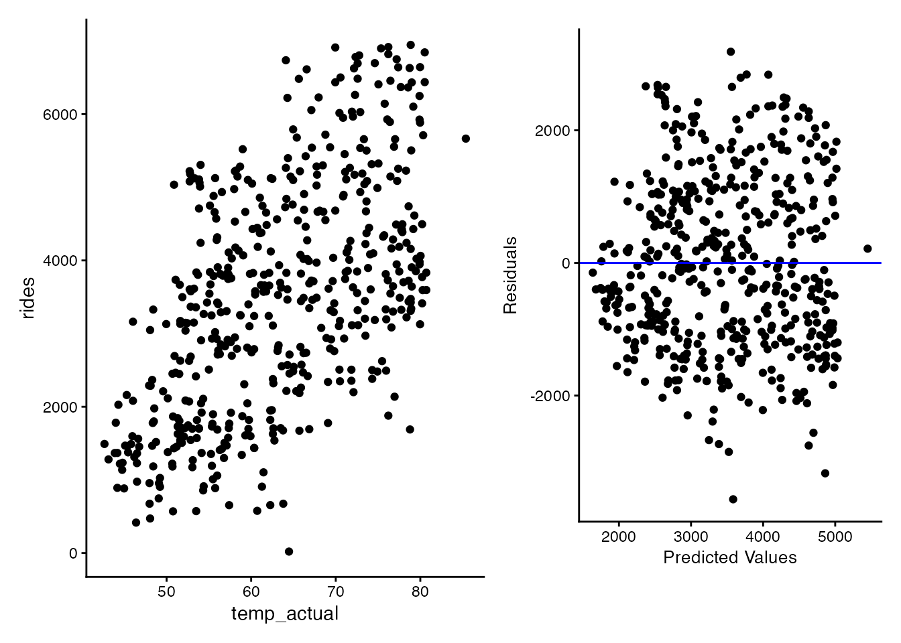

library(tidyverse)
library(ggformula)
library(ggResidpanel)
library(bayesrules)
library(patchwork)18: Tips for Case Studies
Stat 230 - Spring 2026
mod <- lm(rides ~ temp_actual, data = bikes)Figure size
In the first few lines of your code chunks, you can specify figure output.
Default:
gf_point(rides ~ temp_actual, data = bikes)
with
#| fig-width: 4
#| fig-height: 2
at top of chunk:
gf_point(rides ~ temp_actual, data = bikes)
Choosing a couple of residual plots
Sometimes, you might want to include some residual plots instead of the full panel (For example, you want to mention a weird trend in the index plot but all other residual plots are uninteresting). Specify using plots argument.
resid_panel(mod)
vs
resid_panel(mod, plots = "resid")
Combining graphics
Use the {patchwork} package to save individual plots and put them side by side
p1 <- gf_point(rides ~ temp_actual, data = bikes)
p2 <- resid_panel(mod, plots = "resid")
p1 + p2
Customize theme
Oh no! The plots above look terrible together because they use different themes. Note: setting a theme is different with “regular plots” compared to resid panels
p1 <- gf_point(rides ~ temp_actual, data = bikes) + theme_bw()
p2 <- resid_panel(mod, plots = "resid", theme = "bw", title.opt = FALSE)
p1 + p2
Classic theme:
p1 <- gf_point(rides ~ temp_actual, data = bikes) + theme_classic()
p2 <- resid_panel(mod, plots = "resid", theme = "classic", title.opt = FALSE)
p1 + p2
Note: I know they show up as different sizes. I am not aware of a workaround besides using augment() and making your own residual plots.
Tables
The default summary output takes up too much space in a case study report:
summary(mod)
Call:
lm(formula = rides ~ temp_actual, data = bikes)
Residuals:
Min 1Q Median 3Q Max
-3564.3 -1009.3 -116.4 959.1 3184.6
Coefficients:
Estimate Std. Error t value Pr(>|t|)
(Intercept) -2168.77 363.64 -5.964 4.67e-09 ***
temp_actual 89.23 5.67 15.739 < 2e-16 ***
---
Signif. codes: 0 '***' 0.001 '**' 0.01 '*' 0.05 '.' 0.1 ' ' 1
Residual standard error: 1288 on 498 degrees of freedom
Multiple R-squared: 0.3322, Adjusted R-squared: 0.3308
F-statistic: 247.7 on 1 and 498 DF, p-value: < 2.2e-16Instead, use broom::tidy() for a more compact output.
broom::tidy(mod)# A tibble: 2 × 5
term estimate std.error statistic p.value
<chr> <dbl> <dbl> <dbl> <dbl>
1 (Intercept) -2169. 364. -5.96 4.67e- 9
2 temp_actual 89.2 5.67 15.7 1.35e-45You can also specify confidence intervals:
broom::tidy(mod, conf.int = TRUE)# A tibble: 2 × 7
term estimate std.error statistic p.value conf.low conf.high
<chr> <dbl> <dbl> <dbl> <dbl> <dbl> <dbl>
1 (Intercept) -2169. 364. -5.96 4.67e- 9 -2883. -1454.
2 temp_actual 89.2 5.67 15.7 1.35e-45 78.1 100.And to make it look EVEN nicer, pass it into knitr::kable():
broom::tidy(mod, conf.int = TRUE) |>
knitr::kable()| term | estimate | std.error | statistic | p.value | conf.low | conf.high |
|---|---|---|---|---|---|---|
| (Intercept) | -2168.77362 | 363.641906 | -5.964036 | 0 | -2883.2350 | -1454.3122 |
| temp_actual | 89.23389 | 5.669703 | 15.738723 | 0 | 78.0944 | 100.3734 |
which has a digits option:
broom::tidy(mod, conf.int = TRUE) |>
knitr::kable(digits = 2)| term | estimate | std.error | statistic | p.value | conf.low | conf.high |
|---|---|---|---|---|---|---|
| (Intercept) | -2168.77 | 363.64 | -5.96 | 0 | -2883.24 | -1454.31 |
| temp_actual | 89.23 | 5.67 | 15.74 | 0 | 78.09 | 100.37 |
Equations
If you are doing your report in .qmd, you might want to include some math! To include an inline equation, use single $: \(y = \beta_0 + \beta_1 x_1 + \varepsilon, \varepsilon \sim N(0, \sigma^2)\).
To give an equation its own line, use double $$
\[y = \beta_0 + \beta_1 x_1 + \varepsilon, \varepsilon \sim N(0, \sigma^2)\]
(this typsetting language is called LaTeX and there are a bunch of resources available online)
- https://latexeditor.lagrida.com/
- https://webdemo.myscript.com/views/math/index.html#